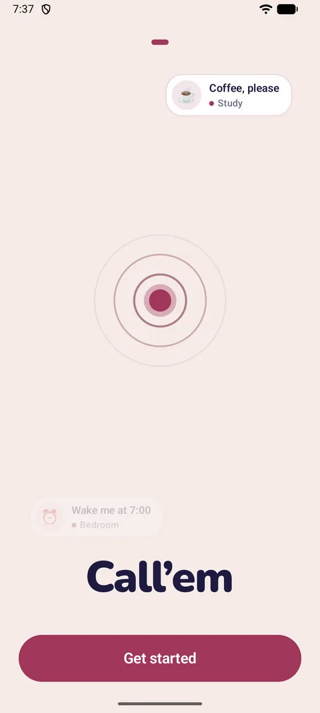
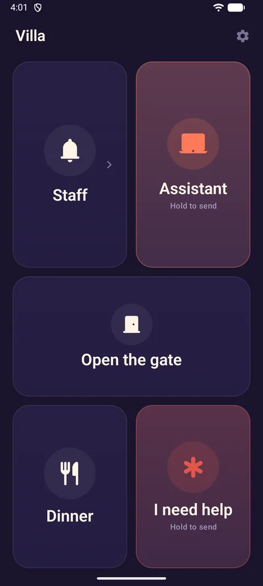
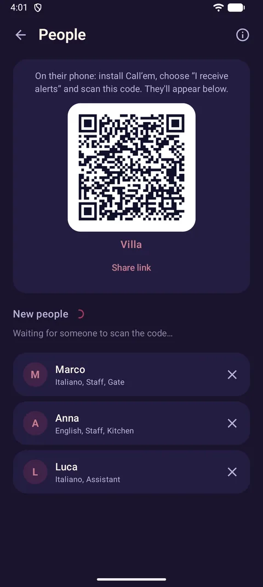
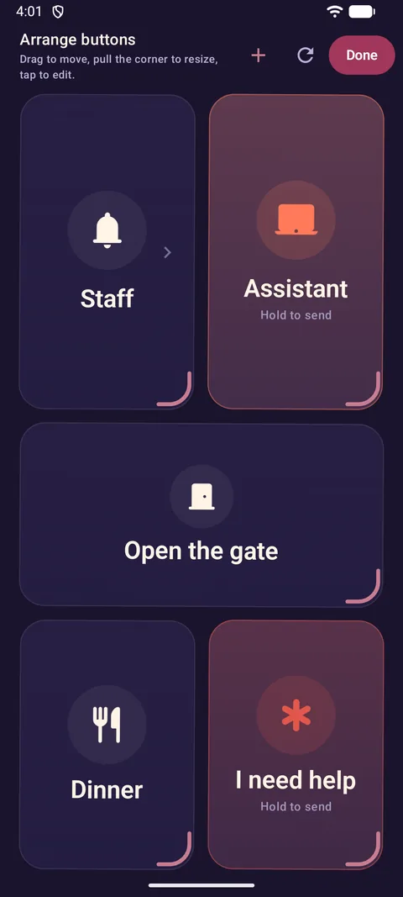
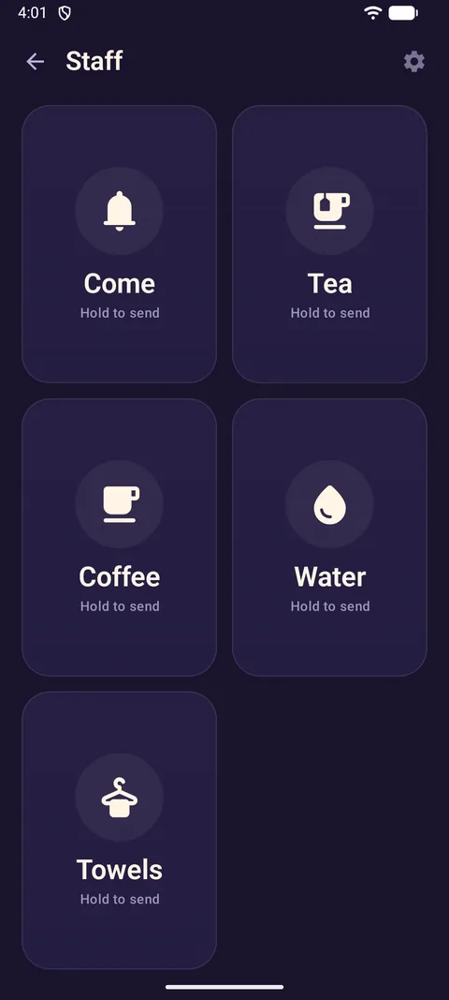
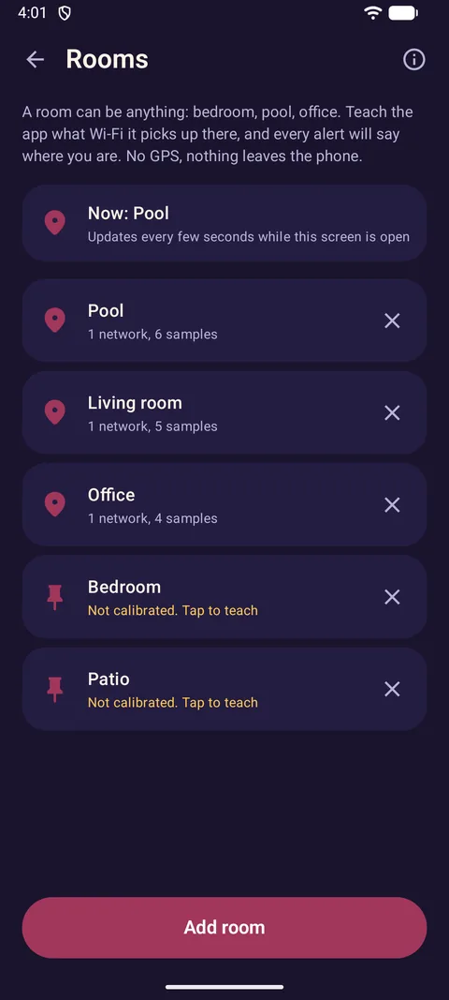
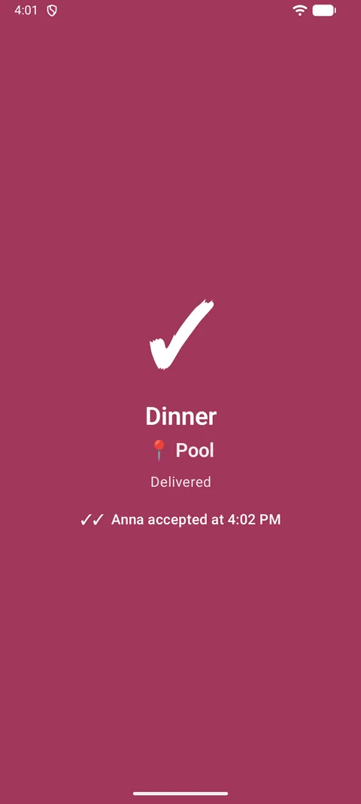
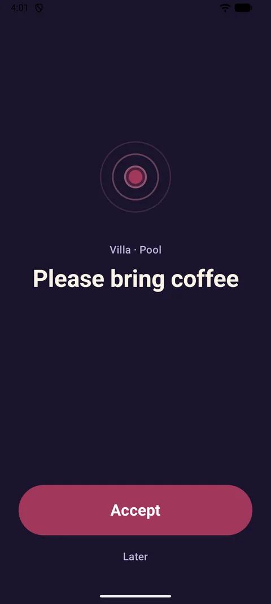

First setup
Install Call'em from Google Play, open it and tap Get started. The wizard takes about three minutes.
- What will this phone do? Choose I call people. (The other options — I receive alerts and Copy from another phone — are explained below.)
- Where will you use it? Pick a preset: home, villa, restaurant, care or office. It only decides which buttons you start with — everything can be changed later.
- Name this place. “Villa”, “Da Marco”, “Main office”. The name becomes the title of every alert, so the people you call know where it comes from.
- How to reach people? Keep Call'em: people install the free app and scan a QR code, and you see when alerts are delivered and accepted.
- Who will you call? A QR code appears. You can invite people right now (see below) or tap Skip for now and do it later from Settings.
- Buttons. Keep the buttons you'll use. Tap Done — your home screen is ready.


Everything you set up lives behind the gear icon ⚙ Settings in the top‑right corner: Buttons, People, Groups, Rooms, Places, Other phones, Home screen widget, General and Call'em Pro. If the phone stays where guests or staff can pick it up, turn on Lock settings — the gear will then ask for your fingerprint, face or phone PIN.
Inviting people
People are the ones who receive your alerts. Each has a name, a language (the message arrives in it) and a phone connected through Call'em.
On your phone
- Open ⚙ Settings → People. At the top is the QR code of this place.
- Show the code to the person — or tap Share link to send the same invitation through any messenger. The link works from any distance: the person doesn't have to be in the room.
- When their phone connects, their name appears under New people. Tap Add. Until you do, nothing is sent to them.
- Tap a person to set their language of messages and tick the groups they belong to.
On their phone
- Install Call'em and choose I receive alerts.
- Enter a name — that's how you will see them.
- Scan your QR code, or tap Paste the link instead if they received a link.
- The screen says Almost there until you tap Add on your phone. Then: You're in!
- Allow notifications when asked, and — on Android 14 and newer — allow full‑screen notifications so alerts show over the lock screen.

Free plan: one place and up to two people. People beyond your plan are shown as Outside your plan and don't receive alerts until you upgrade in Pro.
To remove a person, tap the cross next to their name. They stop receiving alerts; your buttons stay. If someone deletes the app or leaves the place, they need to scan your code again.
Buttons, folders, layout
A button sends one alert: a set text to set people. Open ⚙ Settings → Buttons.
Adding and editing a button
- Name is shown on the tile. Icon: pick one from the library (calls, drinks, food, room, house, care, office) or type any emoji. Color tints the tile.
- Who gets it: tick groups or individual people. Everyone ticked receives the alert. Buttons usually address groups rather than individuals.
- Message text — written in each recipient's language. Fill in at least the main language; others are optional (the main text is sent instead). Placeholders:
{action}button name,{zone}your room,{time}time,{recipient}their name. If the room is unknown, the line with{zone}is dropped. - After a tap: Send immediately, or Hold to send — the finger has to stay on the tile for a moment, which protects from accidental taps. On the widget such buttons ask “Send?” instead.
A yellow mark next to a button means the alert would not go out — usually the button has no recipients or an empty text.
Folders
A folder is a tile that opens into more buttons — for example Staff with Come, Tea, Coffee, Water and Towels inside. Handy when you have more than six buttons. Give it a name, an icon and a color; add buttons inside from the buttons list. Deleting a folder also deletes the buttons in it.
Arranging the home screen
Buttons → Arrange on the home screen: drag a tile to move it, pull the corner to resize, tap to edit. The grid is 4 columns wide; make the important buttons big. Reset layout returns the default arrangement.


Groups
A group puts several people under one name: Staff, Waiters, Family. A button writes to a group and everyone in it gets the alert. Open ⚙ Settings → Groups: tap a group to rename it or tick its members. One person can be in several groups. Deleting a group does not delete people.
The easiest order for a new place: People → Groups → Buttons. Add the people first, combine them into groups, then point each button at a group.
Rooms
Optional, but very handy: teach the app what Wi‑Fi it picks up in each room, and every alert will say where you are — “📍 Pool”. No GPS is used and nothing leaves the phone.
- Open ⚙ Settings → Rooms and tap Add room: “Pool”, “Bedroom”, “Office”…
- Allow Location when asked. Android requires it to read nearby Wi‑Fi networks; the app never uses GPS. Location must be switched on in the phone for Wi‑Fi scanning to work.
- Open the room, stand roughly where you usually are and tap Remember this room. The phone listens for a few seconds and remembers the networks and their signal strength.
- For big rooms tap Add another sample from two or three spots — the samples are averaged.
The top of the Rooms screen shows Now: Pool — what the phone recognises right now. Inside a room, difference shows how closely your surroundings match: under 10 dB is a confident match, over 14 is not recognised. If neighbouring rooms get mixed up, merge them into one or add more samples.
Rooms are attached to alerts when ⚙ Settings → General → Add my room is on (it is by default once rooms are calibrated).

Home screen widget
The widget shows your buttons right on the phone's home screen, no need to open the app.
- Long‑press an empty spot on the home screen, open Widgets and find Call'em. (Or go to ⚙ Settings → Home screen widget: on most phones there's a button that places it for you.)
- Choose what to show: the whole home screen, one folder or chosen buttons. You can add several widgets with different buttons.
- Look: icons (hidden automatically when tiles get small), title bar, widget theme. The accent colour always comes from the app.
Hold to send buttons ask “Send?” on the widget and wait for a second tap.
Statuses and history
After a tap the tile shows the result: Sending…, Delivered, Delivered to some (the rest get it when they're online), No connection — will be sent as soon as it's back. Under the title of the home screen and in the widget you see Delivered to Anna and Anna accepted at 14:05.
⚙ Settings → General → Call history lists every call you sent: who it went to, whether their phone received it (✓) and whether they tapped Accept (✓✓). The history never leaves the phone; clear it any time. Notify when accepted gives a quiet notification when someone accepts while the app is closed.

Several places
Each place is a whole separate setup — buttons, people, groups, rooms. For example “Villa” and “Office”. Open ⚙ Settings → Places and tap Add place: the setup wizard runs again for the new place. Tap a place to make it active — the home screen and the widget immediately show its buttons. You can also switch places from the title on the home screen.
Deleting a place removes it from your phone only; the people who received its alerts are disconnected and would need to scan a new code to join again. The free plan includes one place; more require Pro.
Other phones
A second (third, fourth…) phone can call the same people with the same buttons — your own second phone, or your partner's. Changes made on any phone appear on the others.
- On the new phone open Call'em and choose Copy from another phone (or, if it's already set up as a receiver, Settings → Also call people from this phone).
- On the set‑up phone open ⚙ Settings → Other phones, confirm it's you, and show the code. The code is one‑time — show it only to a phone you trust.
- Scan it with the new phone. On the old phone a request appears: “Pixel 8” asks for a copy of the setup. Tap Send. Nothing leaves the phone before you do.
- The new phone says Done: it now calls the same people. Pro, if you have it, comes along.
Everything is end‑to‑end encrypted; the Call'em server never sees your settings. If a phone is lost or sold, remove it under Phones with this setup — it will stop reaching your people.
Receiving alerts
If someone calls you with Call'em, you only need the free app in I receive alerts mode.
- Install and join. Choose I receive alerts, enter your name, scan the QR code from the person who calls you (they find it under Settings → People) or paste the link they sent. Wait for them to tap Add.
- Allow notifications so alerts can ring even when the app is closed. On Android 14+ also allow full‑screen notifications (the app offers a button to open the right settings page).
- When an alert arrives the phone rings and shows it full‑screen — over the lock screen and in silent mode. Tap Accept so the caller sees you're on your way, or Later.
The Alerts screen lists everything you received. Behind the gear icon: your name, Places you receive alerts from (you can receive from several places at once — tap Scan another code), Sound and Do Not Disturb (system settings for the alert channel) and Leave for any place. Also call people from this phone lets a receiver set up their own buttons too.
Battery optimisation. Some phones (Xiaomi, Huawei, Samsung with aggressive settings) stop background apps. If alerts arrive late, open the phone's settings for Call'em and set battery to Unrestricted / disable optimisation, and allow autostart where such a switch exists.

Pro
The free version includes one place and up to two people. Pro raises the limits: Family — 2 places and 5 people, Business — 5 places and 15 people; one‑time purchases, no subscription. Open ⚙ Settings → Call'em Pro. Where Google Play purchases are available, tap the plan you want; otherwise write to us with the code of this phone shown there and you'll receive an activation code by e‑mail. Full details, prices and the activation FAQ are on the Pro page.
Troubleshooting
An alert didn't arrive
- On your phone, check the person is still listed under People and the button's Who gets it includes them (or their group).
- On their phone, Call'em must be allowed to show notifications and must not be restricted by battery optimisation (see above). Check Sound and Do Not Disturb in the receiver's settings.
- Both phones need internet. If yours was offline, the tile says Will be sent as soon as it's back — it goes out automatically.
- If the person deleted the app or left the place, they have to scan your code again.
The person is stuck on “Almost there” / “waiting to be added”
Open Settings → People on your phone — their name is under New people. Tap Add.
The tile says “Needs Pro”
This place or these people are outside your plan. Remove the extra person, or upgrade on the Pro screen.
No sound, or alerts don't show over the lock screen
On the receiver's phone open Settings → Sound and Do Not Disturb: the “Incoming alerts” channel must be allowed with sound. On Android 14+ full‑screen notifications must be allowed for Call'em (the app shows a prompt with a button). Do Not Disturb may need an exception for Call'em.
Rooms are wrong or “unknown room”
Make sure Wi‑Fi and Location are on. Open the room and add samples from the spots where you actually stand; if two rooms are mixed up, merge them. Rooms work with the Wi‑Fi networks around you — in a place with a single router, far‑apart rooms are distinguishable, adjacent ones often aren't.
The widget shows “Open Call'em to set it up”
Tap it once; the app opens and configures the widget. If the widget is empty, choose what to show in its settings (gear in the title bar).
I got a new phone
Set up the new phone with Copy from another phone (see Other phones). If the old phone is gone, set up the new one from scratch and ask people to scan the new code — and, for Pro, write to us with the new phone code.
Something else
Write to support@callemapp.com with your phone model, Android version and what you see on the screen.